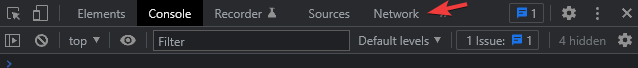

How does the Web work?
Andreas Dranidis
What is the World Wide Web and how is it related to the Internet?
- The Internet refers to the wide network of computer networks through which digital information can be exchanged over different protocols. The Internet is the most popular computer network in the world
- The World Wide Web (WWW), or, the Web for short, is a way to access information via the internet. The Web is just a prominent example of an Internet application. Other examples of internet applications include email, online interactive gaming, chat apps, BitTorrent, etc.

How the Web works
- Computers connected to the Web are called clients and servers
- Clients are the typical web user's internet-connected devices (for example, a computer connected to a Wi-Fi, or a phone connected to a mobile network) and web-accessing software available on those devices (e.g. a web browser like Firefox or Chrome)
- Servers are computers that store information (webpages). When a client device wants to access a webpage, a copy of the webpage is downloaded from the server to the client’s machine and it is displayed in the user's web browser.
So what happens, exactly?
-
You type a URL (Uniform Resource Locator) into the browser
- a URL specifies addresses on the WWW
- a URL has the format:
-
The browser parses the URL information
- This includes the protocol (“https”), the domain name (“github.com”) and the resource (“/”). In this case, there isn’t anything after the “.com” to indicate a specific file, so the browser will retrieve the main (index) page
- The browser goes to a DNS (Domain Name System) server which returns the IP address and port number of the server that hosts website
- The browser takes the IP and port number and requests information in the form of a file associated with that specific URL
So what happens, exactly?
-
The browser takes the IP address and port number, and sends an HTTP request message to the server, asking it to send a copy of the website to the client
- this is done over a TCP connection
- the HTTP protocol defaults to port 80 and HTTPS defaults to port 443
-
If the server approves the client's request, the server sends the client a "200 OK" message, and then starts sending the website's files to the browser in packets
- if the server cannot find the requested file, it sends back an HTTP 404 error message ("Page Not Found")
- The browser assembles the packets into a file, parses the file and displays it to you
HTTP – How Computers Talk on the Web
-
The Hypertext Transfer Protocol (HTTP) is an application-layer protocol that computers use to transmit data (e.g. an HTML file)
-
It is the foundation of data communication for the WWW, where hypertext documents include hyperlinks to other resources that the user can easily access
-
It was initiated by Tim Berners-Lee (1989)
Hypertext and Hyperlinks
-
Hypertext is text displayed on a computer display with references (hyperlinks) to other text that the reader can immediately access.
-
So, it is text which is not constrained to be linear and links to other information.
HTML
-
The HyperText Markup Language (HTML) is the standard markup language of the WWW
-
It runs natively in every browser and is maintained by the W3C
-
It allows the user to create and structure sections, paragraphs, headings, links etc. for web pages and applications
-
HTML makes it possible to organize/format documents, similarly to MS Word. It is NOT a programming language
-
It doesn’t have the ability to create dynamic functionality
-
The first version of HTML was written by Tim Berners-Lee in 1993. Since then, there have been many different versions of HTML
HTML Pros and Cons
- Widely used, with a lot of resources and a huge community behind
- Runs natively in every web browser
- Comes with a flat learning curve
- Open-source and completely free
- Clean and consistent markup
- Easily integrated with backend languages (e.g. PHP)
- Used for static webpages. The content and structure of a webpage
- It does not allow the user to implement logic
- Some browsers adopt new features slowly
- Browser behavior may be hard to predict (e.g. older browsers)
What Does ‘Markup’ Mean?
- Annotate a document with extra information that define elements within a document
- HTML uses angle brackets (< and >) to separate the annotations from the regular text. These annotations are called TAGS in HTML
- Tags don’t show up in the finished document
- Tags can be (and frequently are) nested inside each other
HTML Tree Structure
- An HTML document contains elements (nodes). Most elements can contain other elements. The structure created is a tree
- Parent: a node that directly includes other nodes
- Children: nodes contained within another node
- Siblings: nodes with the same parent
Web Development
- HTML contains a webpage's content organized into a logical structure
- CSS (Cascading Style Sheets) deals with the presentation of a webpage (‘styles’ the content)
- JavaScript enables a user to ‘interact’ with a webpage
FRONTEND
TECHNOLOGIES
(CLIENT-SIDE)
Open your browser, press F12 and go to the Network tab. Try to spot any of the aforementioned stuff
